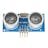

Things used in this project
Hardware components |
|
| M5Stack CM4Stack Development Kit | |

|
DFRobot UNIHIKER - IoT Python Programming Single Board Computer with Touchscreen |
| DFRobot FireBeetle ESP32 IOT Microcontroller (Supports Wi-Fi & Bluetooth) | |
|  | Ultrasonic Sensor - HC-SR04 (Generic) |

|
SG90 Micro-servo motor |
Software apps and online services |
|

|
Arduino IDE |
| DFRobot Mind+ | |
| Thonny | |
Story
First Things First
My initial pitch for what I could provide to help mobility impaired individuals revolved around smart gadgets for the kitchen, so this project stays within that realm. This project is part of the Build2gether challenge which offers feedback on the initial ideas and it was conveyed that improvements to cabinetry would be the most helpful to those with mobility related disabilities. A lot of the issues with cabinets and the kitchen as a whole seem to be in layout and design, which makes sense. It'd be frustrating to have things be just out of reach, or to try to open a cabinet and your wheelchair is in the way. One aspect that I'm able to tackle, though, is the way cabinetry is controlled in the first place. With technology we can open and close cabinets with more convenient systems and remove the inconveniences that mobility impaired people experience. That's only part of the picture, though. This project will be about not only creating Smart/Automatic Cabinets, but also putting together a forward thinking Smart Kitchen solution that could be easily leveraged to add more devices as well as making these custom devices easier to utilize.
We'll go through each piece of the setup step by step, but I want to provide a quick overview of the goal as a whole. There are 3 main parts.
1. Device(s) to kick off the process to tell the cabinet(s) to open/close in the first place
2. The device(s) that open and shut the Smart Cabinet(s)
3. A middleman that can listen for incoming commands and distribute them to the smart devices that are listening for their activation command.
Below is a quick animated depiction of the plan/implementation of the project to convey the full idea before we get into it (it may take a bit to load):

Automatic Cabinets
This first section is a bit tangential, but it's something I could see being an appealing alternative to some users so I wanted to include it before diving into our full Smart Cabinet and Smart Home setup.
The feedback specifically mentioned that voice activated controls would be a "game changer", so I will 100% be including that within this project. However, what came to mind for me when considering what felt ideal for improving cabinetry for the mobility impaired, a simpler solution came to mind. The reason being, if there are a lot of cabinets, they'll need different names for voice activation, or a lot of buttons if used in a different way like a phone app. What if the cabinets could just automatically open when you needed them? Different people have different needs and preferences, so if my focus is cabinets, I may as well offer multiple solutions.
Proximity Driven Cabinetry
The first solution I wanted to tackle was having cabinets open by proximity. There would be a sweet spot in range, where if the cabinets were triggered to open from too far a distance cabinets would open at unwanted times and get quite annoying. Too close and it would be difficult to navigate into range without then blocking the cabinet, especially with wheelchairs involved. But, with that sweet spot in mind, which I estimated to be about a foot away and with the ultrasonic sensor placed beside where the cabinet opens, it could prove to be a very convenient solution. When triggered, the cabinet opens and stays open for a minute before automatically closing. This should give ample time to get whatever is needed from the cabinet, but if not the proximity sensor should detect the user's presence and remain open and this timing can easily be changed in the code.
The device is simple. It's an ultrasonic sensor and a servo. When the user is close, it opens for a minute, then closes if there is nothing in proximity. This could be easily adjusted to add 2 servos per 1 sensor, or whatever else the given setup requires. The code is included.
Especially with a cruising baby in the house (meaning they walk by holding themselves up on walls and things like cabinets) it felt unwise to install this in my own home, so instead I did a quick demonstration of it with a toy chest I built that had previously been a part of an interactive mural I made. It has a servo that opens and closes the toy chest, so I plugged in the arduino and gave it a whirl.

Now We'll Make It Smart
As promised, it's time to make it Smart. This time around I'm specifically using an ESP32 to make connecting to wifi easy. The Seeed Studio XIAO ESP32S3 Sense is wifi enabled, so it can also be used as the microcontroller for your Smart Cabinets. You would just choose the following board if you use it instead of a different ESP32.
Now it's time for code! We'll go more in depth on what exactly is on the other side of this to trigger the command the code is listening for in the first place, but for the time being what matters is that we link to an MQTT server and then listen for a specific message. What I setup in the code was just "cabinet", which would then change the state of the cabinet to opened or closed. The code is included.
With this, the command to kick off sending the message in the first place can be triggered in various ways, including with voice commands. Obviously the following won't work until the server side of everything is setup, but you can run the following line in a command prompt and it will trigger your cabinet servo to move:
mosquitto_pub -h <your server ip> -t home/<topic> -m "cabinet" -u <username> -P <password -p 1883
The above command will make more sense once we get through the next section, but it felt logical to provide a test for our current code while we're discussing it.
Voice Commands (Pt. 1)
Just to feel as though I've fully tackled the Smart Cabinet, here's a way to easily go about integrating voice commands by using something called IFTTT. I'll start by saying I don't currently need the pro version of IFTTT so I didn't run this myself but I'm pretty confident all information here is correct. As we'll get to later, we will be also adding a completely different, completely custom way to go about including voice commands that has been fully tested. This IFTTT setup is an easy to understand way to go about adding voice commands to devices you already own if you don't want the full solution I'm building out in this project, or if you just want multiple ways to activate your cabinets.
I personally have android and Google devices, so I begin with adding a voice command through Google Assistant.
For the "that" portion of the "if this then that" (what IFTTT stands for), we will select webhook. If you set it up as seen below, it should just work.
The external ip address would be for the smart home device we're about to go through, since IFTTT works through external services. If you don't want to use IFTTT or include an external ip, our solution will include a fully internal setup momentarily.
This brings us to what exactly is on the other side of the smart cabinet - the custom hub of the smart kitchen.
Smartifying the Kitchen
(because Smartifying is definitely a word)
I received a CM4Stack Development Kit from M5Stack as part of the Build2gether challenge, which runs with a Raspberry Pi Compute Module 4. This is the device I'll be utilizing to turn the kitchen (and my home in general, eventually) into a smart one.
My goal was to set it up so generically that I can easily add a new device and not need to change a single thing in the smart hub. The short of it is I put together a python script that sets up a Flask server that waits for commands, which then publishes to an MQTT topic that runs on the same service. This can then be easily received by devices like the ESP32 listening for the "cabinet" command.
Setup
Before we get to start coding, we have to do a bit of setup. This is all done on the CM4Stack. Thankfully, you can have the browser up within it so you can just copy paste a lot of the commands below. Just update specific fields to be what you want, like your username and password.
Install and Configure Mosquitto (MQTT Broker) :
First, set up the Mosquitto MQTT broker by installing it:
sudo apt update
sudo apt install -y mosquitto mosquitto-clients
sudo systemctl start mosquitto
sudo systemctl enable mosquittoNext, configure Mosquitto to listen on all network interfaces and set up authentication. Edit the Mosquitto configuration file:
sudo nano /etc/mosquitto/mosquitto.confAdd the following at the end of the file:
allow_anonymous false
password_file /etc/mosquitto/passwdCreate a password file and add a user (change your username in this one):
sudo mosquitto_passwd -c /etc/mosquitto/passwd <username>You'll then be prompted to set your password. After that, restart Mosquitto to apply the changes:
sudo systemctl restart mosquittoConfigure the Network :
Ensure the device has a static IP address by editing the DHCP client configuration file. This makes it so that when you reboot, we don't have to update all the connected devices:
sudo nano /etc/dhcpcd.confAdd the following lines:
interface wlan0
static ip_address=<static_ip>/24
static routers=<router_ip>
static domain_name_servers=<dns_ip>Reboot again:
sudo rebootConfigure your Firewall :
To make sure everything works correctly, we need to make sure certain ports are open:
sudo apt install ufw
sudo ufw allow 1883
sudo ufw allow 5000
sudo ufw enableSet The Environment Variables :
Finally, we have to set our environment variables that will be used by the Python script. Obviously, update the values as needed below:
export MQTT_BROKER_ADDRESS="<static ip>"
export MQTT_TOPIC="home/<name of your topic>"
export HTTP_SERVER_PORT="5000"
export MQTT_USERNAME="<username>"
export MQTT_PASSWORD="<password>"At this point you should be ready to go and able to run the program we discussed at the start of this section. The code is included in the project. Just be sure the values are updated within the code to match what you setup just now and everything should work correctly right off the bat.
More Cabinets
This section will be short, but I figure it stands to reason that there would be more than 1 cabinet that needs to be made Smart. The code for 1 cabinet can be easily changed to accommodate more, but I figure it's still easier to add more cabinets when the program is already setup for multiple cabinets.
Here, I've added a 2nd servo and expanded the program. Instead of just "cabinet", we listen for specific cabinets. So, the program will instead listen for "dishwasher cabinet" and "stove cabinet". This feels like a more realistic representation of how this would actually all get utilized.
As noted in the section going through the Flask server setup, we don't need to do any modifications over there. It will just work.
Custom Voice Commands
It's a good feeling to be able to control all aspects of projects like these. Our devices can all just talking to each other with no reliance on external entities, unless we choose to add them, and that's nice.
Similarly nice was the discovery I had partway through my other Build2gether creation , which is that the UNIHIKER has a built in microphone. By setting up a simple python script, we can have the UNIHIKER serve as a way to run voice commands through the CM4Stack's Flask server we just setup, which then go to devices like the Smart Cabinet we just built.
Like the other UNIHIKER project I have, I'm running it in Mind+. We listen for voice commands and when we hear the word "butler", we send the subsequent words to our flask server. This then goes out to the devices in the home, which includes our Smart Cabinet(s). "Butler" acts as a trigger word, like how you say "Ok Google" or "Hey Siri". This can be easily changed, but that came to mind as a fun one.
The only two libraries needed are:
pip install SpeechRecognition
pip install paho-mqttAnd those can be installed via the Library Management tab in Mind+.
As with the Smart Hiking Stick project I did, you need to ssh into the UNIHIKER and run the following command or you'll run into errors with the Google api:
sudo apt-get install flac
One nice thing about this UNIHIKER program is there's a lot less going on than with the Smart Hiking Stick. In that one, there was so much running simultaneously that I found that I needed to include a timeout for voice commands or it could just end up taking forever to process a command. With this project, we can leave it without a timeout, which leads to faster times processing the commands. As with the other parts of the project, the code is included.
The Wrap Up
We now have a fully operational set of Smart Cabinets, with the option of making them Automatic instead or additionally, a Smart Home Hub ready to go for future custom Smart Home projects, and the ability to control those custom Smart Home projects with voice commands.
While the Smart Cabinet aspect of the project is built for others, I absolutely plan to build upon the Smart Home setup with additional custom devices. And, as far as the Smart Cabinets themselves go, hopefully this setup gets put to use in helping people in a real world setting - that's the goal, at least!
I hope you enjoyed the project. Have a good one.